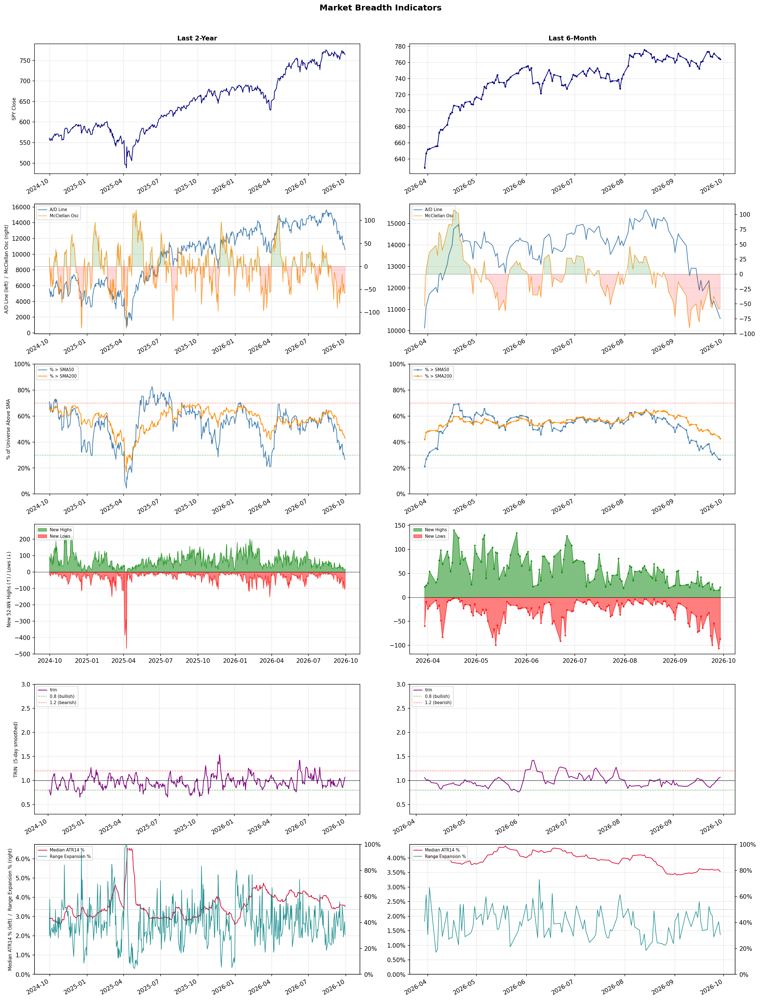

A daily market breadth and sector rotation report for active investors
| Item | Read |
|---|---|
| Regime | Defensive |
| Risk posture | Defensive |
| Universe | 1,320 stocks tracked · 21 new 52-week highs · 30 active swing setups |
| Breadth | only 26.6% of tracked stocks are above SMA50, new lows exceed new highs (86 vs 21), McClellan oscillator (breadth momentum) is negative at -56.5 |
| Leadership | Oil & Gas Refining & Marketing, Diagnostics & Research, and Computer Hardware |
| Weakest groups | Gambling, Resorts & Casinos, and Chemicals |
Use this report to prioritize research and chart review; validate entries, stops, liquidity, earnings, and risk before acting.
| Item | Read |
|---|---|
| Primary read | Defensive regime with Defensive risk posture. |
| Research queue | PBF, MPC, VLO, DINO, UGP |
| Leadership focus | Oil & Gas Refining & Marketing, Diagnostics & Research, and Computer Hardware |
| Caution list | Gambling, Resorts & Casinos, and Chemicals |
| Review prompt | Check extension risk, chart location, fundamentals, valuation, and earnings before using any research row. |
| Item | Read |
|---|---|
| Primary read | 4 active risk warnings; use screen output as watchlist input only. |
| Bullish screens | P, TXG, NTAP, DBRG, ABCL |
| Bearish screens | WVE, CWH, ALKT, CXM, CNX |
| Alerts / levels | Automated trigger, stop, ATR, liquidity, reward/risk, and event-risk levels are pending future enrichment. |
| Review prompt | Open the linked chart, define trigger and invalidation, then check liquidity and event risk independently. |
Risk Posture: Defensive — screen backdrop favors caution; require independent risk review before new exposure
Metric context: McClellan below -50 = elevated selling pressure; below -100 = washout territory. Range Expansion = share of stocks with daily range above their 20-day average. Signal Density = share of tracked names appearing in signal screens.
| Breadth Date | % > SMA50 | % > SMA200 | New Highs | New Lows | McClellan | Median Range | Avg Range | Median ATR14 | Range Expansion | Signal Density |
|---|---|---|---|---|---|---|---|---|---|---|
| 2026-09-29 | 26.6% | 42.7% | 21 | 86 | -56.5 | 2.6% | 3.2% | 3.5% | 30.6% | 7.3% |

Prior comparison date: September 28, 2026
| Metric | Prior | Current | Change |
|---|---|---|---|
| Regime | Defensive | Defensive | unchanged |
| Risk Posture | Defensive | Defensive | unchanged |
| % > SMA50 | 26.8% | 26.6% | -0.2 pts |
| % > SMA200 | 44.1% | 42.7% | -1.4 pts |
| New Highs | 15 | 21 | +6 |
| New Lows | 106 | 86 | +20 |
Top-10 industries entering: Apparel Retail and Copper. Top-10 industries leaving: Software - Infrastructure and Steel. New multi-signal long setups: DBRG. New multi-signal short setups: BIDU, CPRT, CWH, CXM, EXE, FIS, GT, HAYW, KRMN.
| Status | Tickers | Read |
|---|---|---|
| Added | BIDU, CPRT, CWH, CXM, DBRG, EXE, FIS, GT | New technical screen matches vs prior report. |
| Removed | AMC, BROS, CNK, CRM, FLO, HPQ, LAC, LUMN | No longer present in today's technical screen matches. |
| Still Active | ABCL, ALKT, AMTM, BCE, CHTR, CNX, FMC, TXG | Appeared in both current and prior reports. |
| Promoted | none | Model Screen Score improved by at least 15 points. |
| Downgraded | none | Model Screen Score declined by at least 15 points. |
| Direction | Industry | ETF | Prior Rank | Current Rank | Days | Rank Change |
|---|---|---|---|---|---|---|
| Rose | Semiconductor Equipment & Materials | SOXX | 81 | 4 | 14 | +77 |
| Rose | Semiconductors | SOXX | 76 | 7 | 42 | +69 |
| Rose | Electronic Components | XLK | 70 | 8 | 28 | +62 |
| Rose | Capital Markets | KCE | 77 | 19 | 42 | +58 |
| Rose | Specialty Retail | XRT | 73 | 21 | 35 | +52 |
Bull: The Semiconductor Equipment & Materials sector is experiencing a bullish trend due to a robust demand for advanced semiconductor technologies, driven by the ongoing digital transformation across industries. Recent headlines highlight significant stock gains for key players like Lam Research and Applied Materials, reflecting market optimism as companies prepare for increased production capacity to meet the growing needs of sectors such as AI, automotive, and consumer electronics. Additionally, the identification of top semiconductor stocks for 2026 indicates strong investor confidence in the long-term growth potential of the industry, further supporting the rising relative strength of this sector.
Bear: While the semiconductor equipment and materials sector may currently exhibit a rising trend, this optimism could be misleading given the cyclical nature of the industry and potential overcapacity issues. The recent stock gains may be driven more by short-term market sentiment rather than sustainable demand, especially as global economic uncertainties, supply chain disruptions, and geopolitical tensions could dampen future growth prospects. Furthermore, the hype surrounding AI and advanced technologies may not translate into immediate revenue increases for all players, leading to potential corrections in stock valuations as reality sets in.
Verdict: The semiconductor equipment and materials sector is rising primarily due to strong demand for advanced technologies fueled by digital transformation across various industries, particularly in AI, automotive, and consumer electronics. However, investors should remain cautious of the cyclical nature of the industry and the risk of overcapacity, as global economic uncertainties and geopolitical tensions could hinder sustainable growth and lead to potential corrections in stock valuations.
Sources: Google News
Bull: The semiconductor sector is experiencing a rising relative strength primarily due to a rebound following a recent selloff, as highlighted by Investor's Business Daily, which notes that chip stocks are breaking through ceilings. Additionally, Bank of America's identification of top semiconductor stocks to buy suggests that institutional confidence is returning, driven by strong demand forecasts and technological advancements in areas like AI and cloud computing. This renewed interest is likely bolstered by the sector's resilience compared to other tech industries, despite concerns about overvaluation relative to software, indicating a potential correction and opportunity for growth.
Bear: While the semiconductor sector may currently exhibit rising relative strength and some institutional interest, the recent headlines indicate a broader market decline, particularly in technology stocks, which could signal underlying weakness rather than a sustainable rebound. Furthermore, the assertion that semiconductor stocks are overvalued compared to software and the broader market raises concerns about inflated valuations, especially if growth forecasts do not materialize as expected. This could lead to a significant correction, particularly if demand from key drivers like AI and cloud computing falters or if macroeconomic conditions worsen.
Verdict: The semiconductor sector's rising strength is primarily driven by a rebound from recent selloffs, fueled by strong demand forecasts and advancements in AI and cloud computing, which are attracting institutional interest. However, investors should remain cautious of the bear case, as inflated valuations compared to software and potential macroeconomic challenges could lead to a significant correction if growth expectations falter. It's advisable to closely monitor demand trends and macroeconomic indicators before making investment decisions in this sector.
Sources: Google News
Bull: The Electronic Components industry is experiencing rising relative strength primarily due to robust earnings reports from key players like Amphenol, which has been highlighted as a leader in the sector, indicating strong operational performance and demand. Additionally, positive sentiment around manufacturing electronics, as noted in the articles discussing promising trends and stocks to watch, suggests a favorable macro environment driven by increasing technological adoption and infrastructure investments, further bolstering investor confidence in this sector.
Bear: While the recent earnings reports from companies like Amphenol may suggest strength in the electronic components sector, it's crucial to recognize that these results can be influenced by short-term factors such as inventory restocking or temporary demand spikes rather than sustainable growth. Additionally, the sector faces significant headwinds, including rising raw material costs, supply chain disruptions, and potential regulatory challenges, which could undermine profitability and dampen investor sentiment in the long run. The drop in Littelfuse's stock amidst sector-wide selling further indicates underlying vulnerabilities that could overshadow the current positive trends.
Verdict: The electronic components industry is experiencing a rise in relative strength driven by strong earnings from key players like Amphenol, reflecting robust operational performance and increased demand fueled by technological adoption and infrastructure investments. However, investors should remain cautious of the potential risks highlighted by the bear case, particularly the impact of rising raw material costs and supply chain disruptions, which could threaten profitability and lead to a downturn in sentiment. It is advisable to monitor these risks closely while considering investments in this sector.
Sources: Google News
Bull: The Capital Markets sector is experiencing rising relative strength primarily due to a favorable macroeconomic environment characterized by easing oil prices and a firming tech sector, which are likely boosting investor confidence and capital flows into financial markets. Additionally, as highlighted by J.P. Morgan Private Bank, the potential for growth in key stock sectors, including Capital Markets, is being driven by a midterm mindset that suggests increased market participation and investment activity as economic conditions stabilize. This combination of factors positions Capital Markets favorably against other industries, enhancing its attractiveness to investors.
Bear: While the bull thesis highlights rising relative strength in the Capital Markets sector, it overlooks significant risks that could undermine this optimism. The recent headlines indicate a potential slowdown in the tech sector, particularly with global AI stocks facing pressure, which could dampen overall market sentiment and investment flows. Additionally, the midterm mindset may lead to increased volatility and uncertainty, as political dynamics often create unpredictable market conditions, suggesting that the current bullish momentum could be short-lived.
Verdict: The Capital Markets sector is experiencing rising relative strength due to a favorable macroeconomic environment, marked by easing oil prices and a strengthening tech sector, which is boosting investor confidence and capital flows. However, the key risk lies in the potential slowdown of the tech sector and the inherent volatility associated with midterm political dynamics, which could undermine market sentiment and investment activity. Investors should remain cautious and monitor tech sector developments and political events that could impact market stability.
Sources: Google News
Bull: The rising relative strength of the Specialty Retail sector can be attributed to a rebound in consumer discretionary spending, as highlighted by the outperformance of stocks like GameStop and others in September, suggesting increased consumer confidence. Additionally, the positive sentiment around stocks like Williams-Sonoma indicates that specific companies within the sector are successfully navigating challenges, further bolstering the overall industry's performance against other sectors. This trend is supported by a broader economic recovery, which is likely driving demand for specialty retail products.
Bear: While the rising relative strength in the Specialty Retail sector may seem promising, it is essential to recognize that this trend could be driven by short-term consumer enthusiasm rather than sustainable growth. Factors such as rising inflation, potential interest rate hikes, and ongoing supply chain disruptions could negatively impact consumer spending in the long run, suggesting that the recent outperformance of select stocks may not reflect a robust recovery but rather a temporary bounce in an otherwise fragile market. Moreover, the mixed performance of companies like Buckle Inc. indicates that not all players are thriving, highlighting the risks of overestimating the sector's resilience.
Verdict: The Specialty Retail sector's recent rise is primarily driven by a rebound in consumer discretionary spending, bolstered by increased consumer confidence and successful navigation of challenges by select companies. However, a key risk lies in the potential for rising inflation and interest rates, as well as ongoing supply chain disruptions, which could dampen consumer spending and undermine the sector's growth trajectory. Investors should remain cautious and monitor economic indicators closely to assess the sustainability of this trend.
Sources: Google News
| Direction | Industry | ETF | Prior Rank | Current Rank | Days | Rank Change |
|---|---|---|---|---|---|---|
| Fell | Uranium | URA | 26 | 83 | 35 | -57 |
| Fell | Real Estate Services | N/A | 36 | 84 | 35 | -48 |
| Fell | Gambling | N/A | 40 | 87 | 14 | -47 |
| Fell | Travel Services | N/A | 22 | 68 | 42 | -46 |
| Fell | Packaging & Containers | N/A | 34 | 80 | 42 | -46 |
Bear: While the bull analyst points to a sector correction as a temporary phenomenon, the persistent decline in the relative strength of uranium stocks suggests deeper structural issues within the industry, including overcapacity and regulatory hurdles that could stifle growth. Furthermore, the divide between profitable producers and loss-making developers indicates a lack of sustainable demand, as many projects may not be economically viable in a fluctuating market, raising concerns about the long-term viability of the sector despite the current interest in nuclear energy.
Bull: The recent decline in the relative strength of uranium stocks can be attributed to a sector correction that has highlighted the divide between profitable uranium producers and loss-making developers, as noted in the ChartMill headline. Additionally, with the nuclear energy sector gaining attention, as indicated by the 24/7 Wall St. article, there may be short-term volatility as investors reassess their positions in anticipation of future demand, leading to a temporary dip in stock performance despite the long-term bullish outlook for uranium.
Verdict: The recent decline in uranium stocks appears to be driven by a sector correction that underscores the disparity between profitable producers and struggling developers, reflecting short-term volatility as investors reassess their positions amid growing interest in nuclear energy. However, the bear case highlights a critical risk: persistent structural issues such as overcapacity and regulatory challenges could hinder long-term growth, suggesting that investors should remain cautious and closely monitor the viability of projects within the sector before making significant commitments.
Sources: Google News
Bear: While the bull analyst points to AI disruption and mixed earnings as key concerns, it's important to recognize that the broader economic environment is also a significant headwind for the Real Estate Services sector. Rising interest rates, inflationary pressures, and potential recessionary fears are likely to dampen demand for office spaces and real estate services, exacerbating the challenges faced by companies like Cushman & Wakefield and CBRE Group. Furthermore, the shift toward remote work may have a lasting impact on office occupancy rates, suggesting that the sector's struggles are not merely cyclical but indicative of a fundamental shift in market dynamics.
Bull: The Real Estate Services sector is experiencing a decline in relative strength primarily due to concerns over the impact of AI disruption on office real estate, as highlighted by CNBC's report on stock market casualties. Additionally, the mixed earnings reports from major players like Cushman & Wakefield and CBRE Group suggest underlying challenges in the sector, as noted in the Q2 earnings roundup and performance analysis. These factors contribute to a cautious sentiment among investors, leading to underperformance relative to other industries.
Verdict: The Real Estate Services sector's decline is primarily driven by a combination of AI disruption concerns and a challenging economic environment marked by rising interest rates and inflation, which are dampening demand for office spaces. The key risk from the bear case is the potential for a lasting shift in market dynamics due to remote work trends, which could further depress occupancy rates and overall demand for real estate services. Investors should closely monitor economic indicators and the evolving landscape of work to assess the sector's recovery potential.
Sources: Google News
Bear: While the bull thesis highlights potential opportunities in specific stocks like PENN, it underestimates the broader economic headwinds facing the gambling industry, such as persistently high inflation and rising interest rates, which are likely to suppress consumer spending on discretionary activities, including gambling. Furthermore, the "resurgence" in the regional gaming sector may be overstated; any short-term gains could be temporary as consumers tighten their budgets, and the overall trend in falling relative strength suggests that the sector may continue to struggle against these macroeconomic challenges in the coming quarters.
Bull: The gambling industry is currently experiencing a relative strength decline due to macroeconomic pressures, including rising interest rates and inflation, which can dampen consumer spending on discretionary activities like gambling. Additionally, the headlines indicate a potential shift in investor sentiment, as the regional gaming sector is showing signs of resurgence, particularly with positive ratings for stocks like PENN from Goldman Sachs, suggesting that while the overall industry may be under pressure, specific segments are poised for recovery and growth. This mixed sentiment reflects a transitional phase where investors may be cautious amid broader economic concerns but are also recognizing opportunities for growth in select gaming stocks.
Verdict: The gambling industry's decline in relative strength is primarily driven by macroeconomic pressures, including rising interest rates and persistent inflation, which are likely to constrain consumer spending on discretionary activities like gambling. While there may be pockets of growth in specific stocks such as PENN, the bear case highlights a significant risk that any short-term gains in the regional gaming sector could be fleeting, as consumers may continue to tighten their budgets in response to ongoing economic challenges. Investors should remain cautious and consider the potential for further declines in the broader sector before making commitments.
Sources: Google News
Bear: While the bull analyst highlights specific companies and innovations as potential bright spots, the broader trend of declining relative strength in the Travel Services industry cannot be ignored. Rising inflation and interest rates are not just temporary pressures; they are likely to persist, leading to sustained reductions in discretionary spending on travel. Moreover, the focus on tech-driven solutions like AI travel cards may not be enough to offset the fundamental challenges facing the industry, such as labor shortages, increased operational costs, and potential shifts in consumer behavior towards more budget-conscious travel options.
Bull: The Travel Services industry is currently experiencing a decline in relative strength primarily due to macroeconomic pressures such as rising inflation and interest rates, which can dampen consumer spending on discretionary travel. Additionally, the headlines indicate a shift in investor focus towards specific stocks like Marriott and Expedia, suggesting that while the overall sector may be underperforming, certain companies are being spotlighted for their potential, indicating a selective recovery rather than a broad-based strength in the industry. Furthermore, innovations like Webuy's AI travel card may signal an evolving landscape where tech-driven solutions are becoming critical, potentially overshadowing traditional travel service models.
Verdict: The Travel Services industry is experiencing a decline primarily due to persistent macroeconomic pressures, including rising inflation and interest rates, which are significantly reducing discretionary consumer spending on travel. While certain companies may show resilience through innovations like AI travel solutions, the key risk remains that these advancements may not sufficiently counteract fundamental challenges such as labor shortages and increased operational costs, potentially leading to a prolonged period of underperformance in the sector. Investors should remain cautious and consider focusing on companies with strong fundamentals and adaptability to changing consumer behavior.
Sources: Google News
Bear: While the bull analyst attributes the decline in the Packaging & Containers industry to macroeconomic pressures and geopolitical tensions, it's crucial to recognize that these factors are exacerbating underlying structural issues within the sector, such as overcapacity and rising raw material costs. Additionally, the recent gains in packaging stocks, as noted in the Canadian Stock Movers report, may be misleading as they could reflect short-term trading volatility rather than a sustainable recovery, indicating a lack of long-term confidence in the industry's fundamentals. The persistent relative strength trend falling suggests that the market is pricing in these risks, and any temporary rebounds are unlikely to reverse the broader bearish sentiment.
Bull: The Packaging & Containers industry is experiencing a decline in relative strength primarily due to macroeconomic pressures, as highlighted by the Morningstar report on the negative impact of geopolitical tensions, such as the Iran war, which has created uncertainty in supply chains and increased costs. Additionally, the broader market sentiment is reflected in the Zacks articles, which indicate that despite some companies like Avery Dennison and AptarGroup showing resilience, the overall sector is grappling with challenges that have led to a lack of investor confidence, further exacerbated by recent market movements where packaging stocks were among the hardest hit.
Verdict: The Packaging & Containers industry is experiencing a decline primarily due to macroeconomic pressures and geopolitical tensions, which are amplifying existing structural issues like overcapacity and rising raw material costs. While some companies may show short-term gains, the persistent bearish sentiment reflects a lack of long-term confidence in the industry's fundamentals, posing a significant risk that any temporary rebounds are unlikely to signal a sustainable recovery. Investors should remain cautious and consider reallocating resources to sectors with stronger growth potential.
Sources: Google News
| Industry | Rank | ETF | 7d | 14d | 28d | 42d | Chg 42d | Size | 20D | 60D | Composite | Active Setups |
|---|---|---|---|---|---|---|---|---|---|---|---|---|
| Oil & Gas Refining & Marketing | 1 | CRAK | 1 | 2 | 1 | 3 | +2 | 6 | 5.4% | 44.8% | 0.975 | 0 |
| Diagnostics & Research | 2 | N/A | 2 | 1 | 2 | 1 | -1 | 16 | 10.7% | 27.1% | 0.953 | 0 |
| Computer Hardware | 3 | XLK | 5 | 44 | 41 | 9 | +6 | 15 | 7.6% | 10.9% | 0.880 | 1 |
| Semiconductor Equipment & Materials | 4 | SOXX | 13 | 81 | 77 | 39 | +35 | 17 | 15.7% | -0.4% | 0.865 | 1 |
| Health Information Services | 5 | N/A | 3 | 4 | 3 | 2 | -3 | 12 | 9.6% | 31.0% | 0.861 | 0 |
| Oil & Gas Integrated | 6 | XLE | 11 | 3 | 4 | 12 | +6 | 10 | 0.3% | 21.8% | 0.809 | 0 |
| Semiconductors | 7 | SOXX | 8 | 63 | 65 | 76 | +69 | 38 | 11.1% | -7.0% | 0.805 | 1 |
| Electronic Components | 8 | XLK | 10 | 69 | 70 | 52 | +44 | 10 | 8.3% | -7.4% | 0.803 | 1 |
| Copper | 9 | COPX | 12 | 33 | 13 | 18 | +9 | 6 | -3.5% | 21.8% | 0.726 | 0 |
| Apparel Retail | 10 | XRT | 25 | 46 | 21 | 38 | +28 | 8 | -1.3% | 11.2% | 0.724 | 1 |
Rank columns (7d–42d) show the industry's rank that many trading days ago — lower is stronger. Chg 42d = rank change vs 42 trading days ago — positive means the industry moved up. 20D and 60D are the mean stock return within the industry over that period. Active Setups: count of today's swing-trade candidates from this industry appearing across all signal screens.
| Industry | Rank | ETF | 7d | 14d | 28d | 42d | Chg 42d | Size | 20D | 60D | Composite | Active Setups |
|---|---|---|---|---|---|---|---|---|---|---|---|---|
| Gambling | 87 | N/A | 87 | 40 | 59 | 79 | -8 | 5 | -18.9% | -24.9% | 0.038 | 0 |
| Resorts & Casinos | 86 | N/A | 86 | 77 | 80 | 53 | -33 | 6 | -12.3% | -18.9% | 0.058 | 0 |
| Chemicals | 85 | N/A | 83 | 76 | 85 | 87 | +2 | 8 | -13.5% | -22.2% | 0.078 | 0 |
| Real Estate Services | 84 | N/A | 75 | 57 | 52 | 50 | -34 | 9 | -12.8% | -16.5% | 0.093 | 0 |
| Uranium | 83 | URA | 72 | 70 | 36 | 48 | -35 | 6 | -20.1% | -15.1% | 0.110 | 0 |
| REIT - Mortgage | 82 | N/A | 70 | 64 | 45 | 56 | -26 | 11 | -11.8% | -14.3% | 0.115 | 0 |
| Auto Manufacturers | 81 | N/A | 69 | 61 | 75 | 81 | 0 | 10 | -10.8% | -17.1% | 0.121 | 0 |
| Packaging & Containers | 80 | N/A | 77 | 53 | 43 | 34 | -46 | 7 | -12.2% | -12.8% | 0.130 | 0 |
| Solar | 79 | TAN | 65 | 85 | 88 | 88 | +9 | 8 | -5.5% | -32.8% | 0.160 | 0 |
| Leisure | 78 | N/A | 85 | 74 | 71 | 64 | -14 | 9 | -10.5% | -13.8% | 0.169 | 0 |
Rank columns (7d–42d) show the industry's rank that many trading days ago — lower is stronger. Chg 42d = rank change vs 42 trading days ago — positive means the industry moved up. 20D and 60D are the mean stock return within the industry over that period. Active Setups: count of today's swing-trade candidates from this industry appearing across all signal screens.
These are research candidates from top-ranked stocks, capped at five names per industry to avoid over-concentration. Returns shown (60D, 120D, 250D) are historical — they reflect where prices have already moved, not forward expectations. Extension Risk flags names that may require extra patience or a better entry point. They are not buy signals.
Chart: TV = TradingView chart (opens in browser); PDF = local chart file (if downloaded).
| Ticker | Name | Industry | Industry Rank | Market Cap | 60D Hist | 120D Hist | 250D Hist | Extension Risk | Research Reason | Chart |
|---|---|---|---|---|---|---|---|---|---|---|
| PBF | PBF Energy | Oil & Gas Refining & Marketing | 1 | N/A | 53.3% | 76.7% | 155.8% | Extended | Top-ranked in industry; extended | TV |
| MPC | Marathon Petroleum | Oil & Gas Refining & Marketing | 1 | N/A | 46.1% | 70.1% | 106.8% | Constructive | Top-ranked in industry | TV |
| VLO | Valero Energy | Oil & Gas Refining & Marketing | 1 | N/A | 44.0% | 63.2% | 132.6% | Constructive | Top-ranked in industry | TV |
| DINO | HF Sinclair | Oil & Gas Refining & Marketing | 1 | N/A | 42.7% | 83.9% | 108.3% | Constructive | Top-ranked in industry | TV |
| UGP | Ultrapar Participacoes | Oil & Gas Refining & Marketing | 1 | N/A | 39.7% | 34.5% | 84.3% | Constructive | Top-ranked in industry | TV |
| TWST | Twist Bioscience | Diagnostics & Research | 2 | N/A | 86.3% | 263.7% | 561.4% | Extended | Top-ranked in industry; extended | TV |
| NTRA | Natera | Diagnostics & Research | 2 | N/A | 46.1% | 96.6% | 157.5% | Constructive | Top-ranked in industry | TV |
| ILMN | Illumina | Diagnostics & Research | 2 | N/A | 40.0% | 112.5% | 186.4% | Extended | Top-ranked in industry; extended | TV |
| RVTY | Revvity | Diagnostics & Research | 2 | N/A | 35.3% | 69.2% | 74.8% | Constructive | Top-ranked in industry | TV |
| ADPT | Adaptive Biotechnologies | Diagnostics & Research | 2 | N/A | 33.8% | 93.9% | 92.3% | Constructive | Top-ranked in industry | TV |
| P | Everpure | Computer Hardware | 3 | N/A | 67.3% | 108.9% | 55.2% | Extended | Top-ranked in industry; extended | TV |
| CRSR | Corsair Gaming | Computer Hardware | 3 | N/A | 48.4% | 136.1% | 50.9% | Extended | Top-ranked in industry; extended | TV |
| DELL | Dell Technologies | Computer Hardware | 3 | N/A | 31.2% | 192.3% | 285.5% | Extended | Top-ranked in industry; extended | TV |
| SNDK | SanDisk | Computer Hardware | 3 | N/A | -0.8% | 121.5% | 1441.7% | Extended | Top-ranked in industry; extended | TV |
| IONQ | IonQ Inc | Computer Hardware | 3 | N/A | -10.1% | 51.5% | -28.6% | Lagging | Top-ranked in industry; lagging | TV |
| AEHR | Aehr Test Systems | Semiconductor Equipment & Materials | 4 | N/A | 39.3% | 59.6% | 234.7% | Constructive | Top-ranked in industry | TV |
| AXTI | AXT Inc | Semiconductor Equipment & Materials | 4 | N/A | 23.1% | 47.0% | 1641.2% | Constructive | Top-ranked in industry | TV |
| FORM | FormFactor | Semiconductor Equipment & Materials | 4 | N/A | 14.8% | 15.7% | 274.1% | Constructive | Top-ranked in industry | TV |
| COHU | Cohu Inc | Semiconductor Equipment & Materials | 4 | N/A | 12.4% | 91.8% | 224.5% | Constructive | Top-ranked in industry | TV |
| VECO | Veeco Instruments | Semiconductor Equipment & Materials | 4 | N/A | -5.6% | 34.8% | 68.8% | Lagging | Top-ranked in industry; lagging | TV |
These are technical screen matches from existing signal files. They are not trade recommendations. Trigger, stop, ATR, liquidity, reward/risk, and event risk still require separate validation until those inputs are available.
Model Screen Score is weighted by signal count, industry rank, freshness, and setup type. It is not a probability of profit, expected return, or suitability rating. Industry cap: max 3 candidates per industry.
Signal glossary: Momentum Pullback = stock in an uptrend that has pulled back 10–30% and shows re-entry conditions. MA Compression = short- and long-term moving averages converging, often preceding a directional move. Three-Day Up/Down = three consecutive closes in the same direction. New 52Wk High/Low = price reached a new annual extreme.
Chart: TV = TradingView chart (opens in browser); PDF = local chart file (if downloaded).
| Ticker | Industry | Setups | Close | Industry Rank | Signal Count | Model Screen Score | Reason | Chart |
|---|---|---|---|---|---|---|---|---|
| P | Computer Hardware | New 52Wk High; Three-Day Up | 130.05 | 3 | 2 | 100 | Multi-signal; top industry breakout | TV |
| TXG | Health Information Services | New 52Wk High; Three-Day Up | 90.04 | 5 | 2 | 93 | Multi-signal; top industry breakout | TV |
| NTAP | Software - Infrastructure | New 52Wk High; Three-Day Up | 209.18 | 12 | 2 | 85 | Multi-signal; new-high strength | TV |
| DBRG | Asset Management | MA Compression; New 52Wk High | 16.00 | 29 | 2 | 75 | Multi-signal; new-high strength | TV |
| ABCL | Biotechnology | New 52Wk High; Three-Day Up | 14.82 | 27 | 2 | 70 | Multi-signal; new-high strength | TV |
| XERS | Biotechnology | New 52Wk High; Three-Day Up | 9.98 | 27 | 2 | 70 | Multi-signal; new-high strength | TV |
| STRC | Software - Application | New 52Wk High; Three-Day Up | 99.56 | 36 | 2 | 70 | Multi-signal; new-high strength | TV |
| RUM | Internet Content & Information | Momentum Pullback | 7.72 | 50 | 2 | 50 | Multi-signal; pullback setup | TV |
Bearish setups — stocks making new lows or showing persistent downside patterns. Validate carefully before acting.
| Ticker | Industry | Setups | Close | Industry Rank | Signal Count | Model Screen Score | Reason | Chart |
|---|---|---|---|---|---|---|---|---|
| WVE | Biotechnology | New 52Wk Low; Three-Day Down | 3.64 | 27 | 2 | 40 | Multi-signal; new-low weakness | TV |
| CWH | Auto & Truck Dealerships | New 52Wk Low; Three-Day Down | 5.10 | 32 | 2 | 40 | Multi-signal; new-low weakness | TV |
| ALKT | Software - Application | New 52Wk Low; Three-Day Down | 13.37 | 36 | 2 | 40 | Multi-signal; new-low weakness | TV |
| CXM | Software - Application | New 52Wk Low; Three-Day Down | 4.82 | 36 | 2 | 40 | Multi-signal; new-low weakness | TV |
| CNX | Oil & Gas E&P | New 52Wk Low; Three-Day Down | 31.21 | 37 | 2 | 40 | Multi-signal; new-low weakness | TV |
| EXE | Oil & Gas E&P | New 52Wk Low; Three-Day Down | 84.18 | 37 | 2 | 40 | Multi-signal; new-low weakness | TV |
| TTD | Advertising Agencies | New 52Wk Low; Three-Day Down | 12.05 | 40 | 2 | 40 | Multi-signal; new-low weakness | TV |
| TRU | Financial Data & Stock Exchanges | New 52Wk Low; Three-Day Down | 64.29 | 42 | 2 | 35 | Multi-signal; new-low weakness | TV |
| HAYW | Electrical Equipment & Parts | New 52Wk Low; Three-Day Down | 12.34 | 46 | 2 | 35 | Multi-signal; new-low weakness | TV |
| AMTM | Specialty Business Services | New 52Wk Low; Three-Day Down | 18.15 | 47 | 2 | 35 | Multi-signal; new-low weakness | TV |
| CPRT | Specialty Business Services | New 52Wk Low; Three-Day Down | 27.14 | 47 | 2 | 35 | Multi-signal; new-low weakness | TV |
| BCE | Telecom Services | New 52Wk Low; Three-Day Down | 20.14 | 48 | 2 | 35 | Multi-signal; new-low weakness | TV |
| CHTR | Telecom Services | New 52Wk Low; Three-Day Down | 110.67 | 48 | 2 | 35 | Multi-signal; new-low weakness | TV |
| TU | Telecom Services | New 52Wk Low; Three-Day Down | 8.16 | 48 | 2 | 35 | Multi-signal; new-low weakness | TV |
| BIDU | Internet Content & Information | New 52Wk Low; Three-Day Down | 86.71 | 50 | 2 | 35 | Multi-signal; new-low weakness | TV |
| Z | Internet Content & Information | New 52Wk Low; Three-Day Down | 27.34 | 50 | 2 | 35 | Multi-signal; new-low weakness | TV |
| FMC | Agricultural Inputs | New 52Wk Low; Three-Day Down | 9.09 | 51 | 2 | 35 | Multi-signal; new-low weakness | TV |
| GT | Auto Parts | New 52Wk Low; Three-Day Down | 5.00 | 54 | 2 | 35 | Multi-signal; new-low weakness | TV |
| MIR | Specialty Industrial Machinery | New 52Wk Low; Three-Day Down | 14.34 | 56 | 2 | 35 | Multi-signal; new-low weakness | TV |
| FIS | Information Technology Services | New 52Wk Low; Three-Day Down | 33.35 | 59 | 2 | 35 | Multi-signal; new-low weakness | TV |
| WIT | Information Technology Services | New 52Wk Low; Three-Day Down | 1.61 | 59 | 2 | 35 | Multi-signal; new-low weakness | TV |
| KRMN | Aerospace & Defense | New 52Wk Low; Three-Day Down | 32.86 | 66 | 2 | 25 | Multi-signal; new-low weakness | TV |
How To Use This Report
| Use | Purpose |
|---|---|
| Market map | Start with breadth, regime, risk warnings, and what changed since the prior report. |
| Industry scan | Use leading, deteriorating, rising, and declining industries to focus research. |
| Research queue | Treat long-term candidates as names for deeper fundamental, valuation, and chart review. |
| Technical review | Treat bullish and bearish screen matches as watchlist inputs that require independent trigger, stop, liquidity, and event-risk checks. |
| Source follow-up | Use chart links and source files to verify raw inputs before relying on any row. |
What This Report Is Not
| Not | Meaning |
|---|---|
| Investment advice | The report does not evaluate personal objectives, risk tolerance, tax situation, account type, or suitability. |
| Buy/sell recommendation | Named tickers are research candidates or screen matches, not recommendations to transact. |
| Price target | The report does not provide fair value estimates, targets, or expected returns. |
| Trade plan | Trigger, stop, sizing, reward/risk, liquidity, and event-risk review remain separate user work. |
| Performance claim | Model Screen Score is not validated historical performance or a forecast of future results. |
| Item | Note |
|---|---|
| Version | Daily Report Methodology v1 |
| Model Screen Score | Screen-fit rank based on signal count, industry rank, freshness, and setup type. |
| Not predictive proof | The score is not expected return, probability of profit, historical validation, or suitability analysis. |
| Industry ranks | Composite industry ranks use existing daily ranking outputs and historical rank columns when available. |
| Research candidates | Long-term rows are research candidates from ranked stocks and leading industries, with historical returns labeled as historical only. |
| Technical matches | Bullish and bearish rows are screen matches requiring independent chart, trigger, stop, liquidity, and event-risk review. |
| Source | Status | Rows | Path |
|---|---|---|---|
| Market breadth | present | 1253 | breadth_20260929.csv |
| Industry composite rankings | present | 87 | all_industry_composite_20260929.csv |
| Top ranked stocks | present | 138 | top_ranked_composite_20260929.csv |
| All ranked stocks | present | 1320 | all_stocks_composite_sorted_20260929.csv |
| Top momentum pullbacks | present | 1473 | top_momentum_pullbacks_20260929.csv |
| MA compression | present | 1473 | ma_compression_stocks_20260929.csv |
| Three-day up/down | present | 260 | three_day_up_down_stocks_20260929.csv |
| New 52-week members | present | 107 | breadth_new_52wk_members_20260929.csv |
This report is generated from automated technical screens and is for informational and research purposes only. It is not investment advice, a solicitation, or a recommendation to buy or sell any security. Past performance is not indicative of future results. You are solely responsible for your own investment decisions. Consult a licensed financial advisor before acting on any information herein.